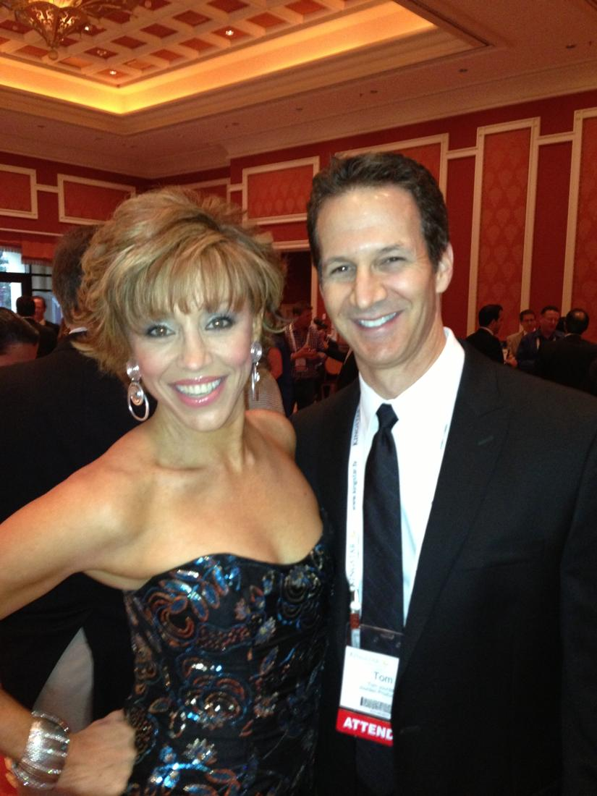

Best FEMALE Infomercial Presenter
Health and Wellness Celebrity Forbes Riley Competes Against Herself for Best Female TV Presenter of the Year

| PR Web |
St. Petersburg, FL (PRWEB) July 22, 2013
For the 5th consecutive year, America’s leading fitness and lifestyle authority, innovative product creator and 2010 National Fitness Hall of Fame inductee Forbes Riley has received three nominations in the two top categories for the Electronic Retailing Association (ERA) Moxie Awards. This year is unique because she is nominated twice in the same category for the “ Best Female Presenter of the Year”—an unprecedented situation, with the third nominee in the category being ABC Good Morning America’s former host, Joan Lunden. Forbes also is nominated for “Best Home Shopping Guest of the Year” for the outstanding work she has done with her SpinGym on HSN.
The Moxie Awards, not unlike the Oscar Awards for the movies, is the crowning event for the Direct Response Marketing Industry, recognizing the best in television, radio and online campaigns. As a past multiple award winner, Forbes has been recognized over the years for her excellence in bringing high-quality, affordable healthy lifestyle products to global audiences via infomercials, home shopping, retail, fitness and rehab centers. Some of her highlights include the Jack LaLanne Juicer, the Montel Williams HealthMaster Blender, Urban Rebounder, Mission Athletic Cool Towels and the Forbes Riley SpinGym.
Tom Haire, editor-in-chief of Response, the industry’s premiere magazine said, “Forbes is one of the foremost TV hosts and producers I’ve known in my time in the business. Her passion for and interest in the success of promoting quality products — and not just in her work on TV — shines through in every conversation. Forbes’ wit and intelligence as one of the most articulate presenters makes her the very best at her craft in the business.”
Forbes Riley continues to be an indisputable leader in the Direct Response Industry not only because of her innate ability to communicate and connect with audiences but because of her uniquely diverse background. Recently spotlighted in the Huffington Post as one of America’s most exciting entrepreneurs, Forbes Riley’s experience began as a stage actress on Broadway combined with Second City Improv training, hosted the nationally syndicated radio network Westwood One, had her own daily talk show on TLC, launched and spent six years hosting ESPN’s X-Games, hosted more than 120 national infomercials and this doesn’t even scratch the surface of her career. It is this resume that sets her apart from the rest.
It comes as no surprise that for the first time in ERA history, Forbes Riley is nominated against herself in the same category. As best female presenter, Forbes demonstrated seamless diversity as she co-hosted with Myles Bader in the AJ Khubani Telebrands show “Natural Solutions to Things that Bug You!” Forbes was “the girl next door,” providing chemical-free solutions for your home, then she transformed into the hip financial executive alongside Adrian Morrison in the Biz Op show “Social Media Profits from Your Home.” These two products, though different, both serve to support Forbes Riley’s brand and mission to promote health, wealth and happiness.
Michael Planit, a business strategist and leading DRTV marketer commented, “Forbes is forward-thinking, energetic, and one of the most articulate hosts in the business. When she believes, you believe. Forbes will work closely with you to find the right words, and the right way to present your product. If you need your product presented, described, demonstrated, and SOLD, then look no further! Forbes is the consummate professional who knows how to get it done!”
While the taped infomercials described above are certainly award-worthy, to really witness the strength of Forbes’s skill, seeing her live is like nothing else. This explains the third nomination Forbes received this year: Best Live Shopping On-Air Guest. In an environment that hosts such recognizable talent as Susan Lucci, Jennifer Flavin Stallone, Joy Mangano, Iman, Tony Little, Serena Williams, Betsey Johnson and even Jennifer Lopez, this is an extraordinary achievement. And yet, it is not surprising since for more than two decades, Forbes and her brand have remained a world-class staple of quality in the world of home shopping, including her own product, SpinGym.
▶ Watch the video on YouTube
Forbes, now at the top of her career, isn’t showing any signs of slowing down. Forbes Riley defines how the infomercial industry has evolved—from the loud aggressive pitches of Billy Mays or Ron Popeil promoting their latest gadgets—Forbes represents a new era of communicating product ideas. There is no yelling and screaming, which is an approach that is especially ineffective for women, because no one wants to hear their mom, wife or girlfriend nag. Instead, Forbes engages audiences in a subtle, truthful conversation about products in shows that can inspire change and innovation—a style that is uniquely hers.
“There is a reason why Forbes is an industry in her own right —she is the quintessential ‘success magnet.’ That success comes from the fact that Forbes has the unique ability to identify the key reasons a customer will purchase a given product and then connect with that customer in a way that is warm and genuine. Blessed with boundless energy and extraordinary charisma…” said Dave King, celebrity television host.

Free · live on Zoom every Sunday
The Secret Pitch Formula
Join Forbes live for the Pitch Secrets Masterclass. Over 80,000 people have learned the 7-second hook, the three pitch patterns behind $2.5 billion in sales, and how to close without sounding salesy. Free, with a gift worth $500 for registering.
Sundays, 2 p.m. PT / 5 p.m. ET. Registration and the Zoom link are at pitchsecretstraining.com.